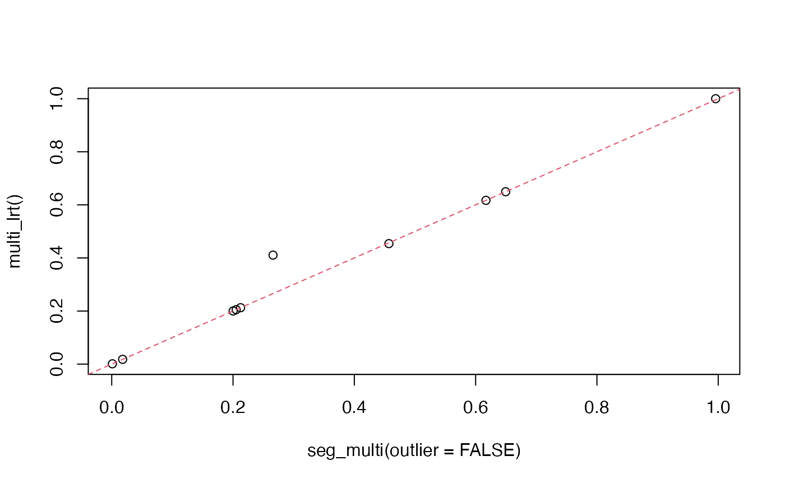

Introduction
We provide a walk-through of how to run tests for segregation distortion at many loci in parallel. Details of the methods may be found in Gerard et al. (2025a) and Gerard et al. (2025b).
Analysis
Data sets ufit, ufit2, and
ufit3 contain the genotyping output of
updog::multidog() using three different models.
-
ufit: Uses thenormmodel without specifying who the parents are. -
ufit2: Uses thef1ppmodel, specifying the parents. -
ufit3: Uses thef1model, specifying the parents.
You can convert this genotyping output to what
seg_multi() expects using multidog_to_g().
If you did not use the f1pp or f1
models, use ether the all_gl (to run tests using genotype
log-likelihoods) or all_g (to run tests assuming genotypes
are known) options, and you must specify the ID’s of the parents.
o1 <- multidog_to_g(ufit, ploidy = 4, type = "all_g", p1 = "indigocrisp", p2 = "sweetcrisp")
o2 <- multidog_to_g(ufit, ploidy = 4, type = "all_gl", p1 = "indigocrisp", p2 = "sweetcrisp")If you did use the f1pp or f1
models, use either the off_gl (to run tests using genotype
log-likelihoods) or off_g (to run tests assuming genotypes
are known) options.
o3 <- multidog_to_g(ufit2, ploidy = 4, type = "off_g")
o4 <- multidog_to_g(ufit2, ploidy = 4, type = "off_gl")
o5 <- multidog_to_g(ufit3, ploidy = 4, type = "off_g")
o6 <- multidog_to_g(ufit3, ploidy = 4, type = "off_gl")We would recommend always using genotype log-likelihoods. But the option is there for known genotypes.
Parallelization support is provided through the future package. You
specify how to implement parallelization using
future::plan(). Then you run seg_multi(). Then
you shut down the parallelization with future::plan(). The
most common plan is future::multisession(), where you
specify the number of parallel processes with the workers
argument. You can get the maximum number of workers via
future::availableCores()
future::availableCores()
#> system
#> 16So a typically workload looks something like this:
future::plan(future::multisession(workers = 2))
mout1 <- seg_multi(
g = o2$g,
p1 = o2$p1,
p2 = o2$p2,
p1_ploidy = 4,
p2_ploidy = 4,
ret_out = TRUE)
future::plan(future::sequential())The output is a data frame. The most important parts of this are the
snp and p_value columns.
mout1[c("snp", "p_value")]
#> snp p_value
#> 1 1_44673475 0.20525001
#> 2 11_28836119 0.20013872
#> 3 12_31029646 0.01800832
#> 4 12_8487773 0.99521289
#> 5 2_1426329 0.45701691
#> 6 2_20070837 0.13228993
#> 7 2_40108108 0.26596888
#> 8 4_37820371 0.21251272
#> 9 6_30619745 0.61700707
#> 10 6_4350249 0.64950122It looks like only SNP 12_31029646 is in possible
segregation distortion. Let’s compare the expected frequencies (from the
q0 column) against the observed modes.
round(mout1$q0[mout1$snp == "12_31029646"][[1]], digits = 4)
#> [1] 0.2008 0.5985 0.2008 0.0000 0.0000
o1$g["12_31029646", ] / sum(o1$g["12_31029646", ])
#> 0 1 2 3 4
#> 0.1541667 0.5833333 0.2625000 0.0000000 0.0000000So SNP 12_31029646 likely got flagged because there are
too many individuals with a genotype of 2, and not enough with a
genotype of 0.
If we would have run outlier = FALSE, then SNP
2_20070837 would also have been flagged for possible
segregation distortion
future::plan(future::multisession(workers = 2))
mout2 <- seg_multi(
g = o2$g,
p1 = o2$p1,
p2 = o2$p2,
p1_ploidy = 4,
p2_ploidy = 4,
outlier = FALSE)
future::plan(future::sequential())
mout2[, c("snp", "p_value")]
#> snp p_value
#> 1 1_44673475 0.205250155
#> 2 11_28836119 0.200138927
#> 3 12_31029646 0.018008343
#> 4 12_8487773 0.995749454
#> 5 2_1426329 0.457017169
#> 6 2_20070837 0.001131654
#> 7 2_40108108 0.265969050
#> 8 4_37820371 0.212513126
#> 9 6_30619745 0.617007947
#> 10 6_4350249 0.649501842Let’s look at the posterior mode genotypes of SNP
2_20070837:
o1$g["2_20070837", ]
#> 0 1 2 3 4
#> 40 166 32 2 0
o1$p1["2_20070837"]
#> 2_20070837
#> 0
o1$p2["2_20070837"]
#> 2_20070837
#> 2So SNP 2_20070837 likely got flagged because of two
individuals that are very likely a genotype of 3, which is impossible if
the parents have genotypes 0 and 2. Including
outlier = TRUE previously made it so that we would ignore
this discrepancy (up to a point). You can get the posterior probability
that an individual is an outlier if you set ret_out = TRUE
(which I previously did).
multi_lrt()
The older function multi_lrt(), only provides support
for tetraploids. You can still use it instead of
seg_multi() for tetraploids.
future::plan(future::multisession(workers = 2))
mout3 <- multi_lrt(
g = o2$g,
p1 = o2$p1,
p2 = o2$p2
)
future::plan(future::sequential())It’s a little faster, but it cannot account for outliers, so it will
mostly be the same as setting outlier = FALSE.
plot(
mout2$p_value,
mout3$p_value,
xlab = "seg_multi(outlier = FALSE)",
ylab = "multi_lrt()")
abline(0, 1, lty = 2, col = 2)
The one discrepancy above is caused by the new way we calculate the degrees of freedom:
The two approaches should give almost equivalent results most of the time, but the new way is a little better.
References
Gerard D, Thakkar M, & Ferrão LFV (2025a). “Tests for segregation distortion in tetraploid F1 populations.” Theoretical and Applied Genetics, 138(30), p. 1–13. doi:10.1007/s00122-025-04816-z.
Gerard, D, Ambrosano, GB, Pereira, GdS, & Garcia, AAF (2025b). “Tests for segregation distortion in higher ploidy F1 populations.” G3: Genes | Genomes | Genetics, p. jkaf212. doi:10.1093/g3journal/jkaf212.